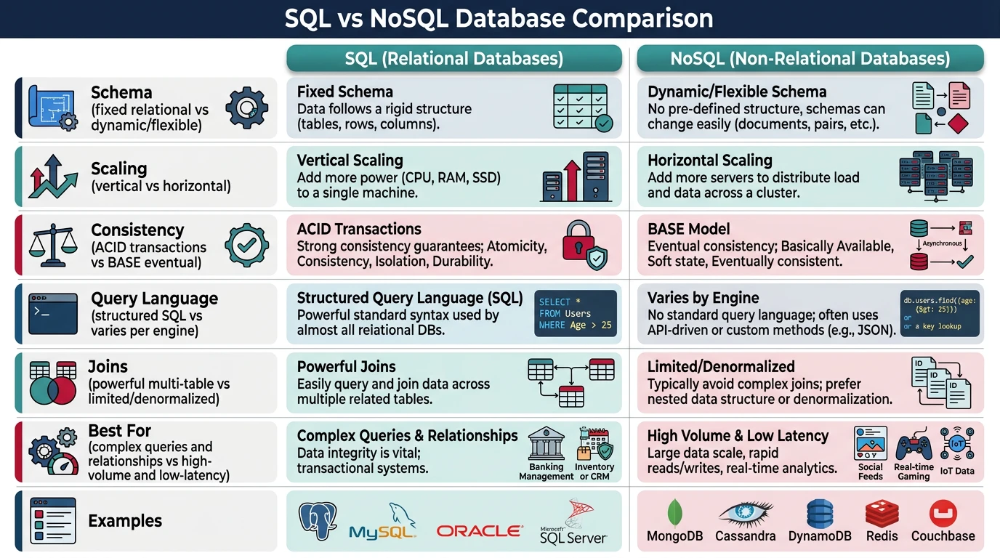

Database Fundamentals
System Design Mastery
Introduction to System Design
Fundamentals, why it matters, key conceptsScalability Fundamentals
Horizontal vs vertical scaling, stateless designLoad Balancing & Caching
Algorithms, Redis, CDN patternsDatabase Design & Sharding
SQL vs NoSQL, replication, partitioningMicroservices Architecture
Decomposition, discovery, testing, resilienceAPI Design & REST/GraphQL
RESTful principles, GraphQL, gRPCMessage Queues & Event-Driven
Kafka, outbox, event sourcing, idempotent consumersCAP Theorem & Consistency
Distributed trade-offs, eventual consistencyRate Limiting & Security
Throttling algorithms, DDoS protectionMonitoring & Observability
Logging, metrics, distributed tracingReal-World Case Studies
URL shortener, chat, feed, video streamingData Modeling & Schema Design
Data modeling, schema design, indexingDistributed Systems Deep Dive
Consensus, Paxos, Raft, coordinationAuthentication & Security
OAuth, JWT, zero trust, complianceQuestions & Trade-offs
Common questions, SQL vs NoSQL, push vs pullDatabase design is one of the most critical decisions in system architecture. The choice between SQL and NoSQL, along with proper sharding strategies, directly impacts scalability, performance, and maintainability.

SQL vs NoSQL: The Fundamental Choice
Before diving into advanced topics, understand the core differences:
| Aspect | SQL (Relational) | NoSQL (Non-Relational) |
|---|---|---|
| Schema | Fixed schema, enforced structure | Dynamic/flexible schema |
| Scaling | Vertical (scale up) | Horizontal (scale out) |
| Consistency | Strong ACID guarantees | Eventually consistent (BASE) |
| Query Language | SQL (standardized) | Varies by database |
| Joins | Powerful multi-table joins | Limited/no joins |
| Best For | Complex queries, transactions | High volume, flexible data |
| Examples | PostgreSQL, MySQL, SQL Server | MongoDB, Cassandra, DynamoDB |
NoSQL Database Types
Document Stores
Store data as JSON-like documents. Each document can have different structure.
// MongoDB document example
{
"_id": "user_123",
"name": "John Doe",
"email": "john@example.com",
"orders": [
{"id": "ord_1", "total": 99.99, "items": 3},
{"id": "ord_2", "total": 149.50, "items": 2}
],
"preferences": {
"newsletter": true,
"notifications": ["email", "sms"]
}
}Use cases: Content management, user profiles, product catalogs
Examples: MongoDB, CouchDB, Firestore
Key-Value Stores
Simplest NoSQL type. Store data as key-value pairs with O(1) lookups.
# Redis key-value operations
import redis
r = redis.Redis()
# Simple string
r.set("user:123:name", "John Doe")
r.get("user:123:name") # b"John Doe"
# Hash (object-like)
r.hset("user:123", mapping={
"name": "John Doe",
"email": "john@example.com",
"login_count": 42
})
r.hgetall("user:123")Use cases: Caching, session storage, real-time data
Examples: Redis, Memcached, DynamoDB
Wide-Column Stores
Store data in column families. Optimized for queries over large datasets.
-- Cassandra CQL example
CREATE TABLE user_activity (
user_id UUID,
timestamp TIMESTAMP,
action TEXT,
details MAP<TEXT, TEXT>,
PRIMARY KEY (user_id, timestamp)
) WITH CLUSTERING ORDER BY (timestamp DESC);
-- Query last 100 activities for a user
SELECT * FROM user_activity
WHERE user_id = ?
LIMIT 100;Use cases: Time-series data, IoT, logging, analytics
Examples: Cassandra, HBase, ScyllaDB
Graph Databases
Optimized for storing and querying relationships between entities.
-- Neo4j Cypher query example
// Find friends of friends who also like "Science Fiction"
MATCH (user:Person {name: "Alice"})-[:FRIEND]->(friend)-[:FRIEND]->(fof)
WHERE (fof)-[:LIKES]->(:Genre {name: "Science Fiction"})
AND NOT (user)-[:FRIEND]->(fof)
RETURN DISTINCT fof.name AS recommendation
// Find shortest path between two users
MATCH path = shortestPath(
(a:Person {name: "Alice"})-[:FRIEND*]-(b:Person {name: "Bob"})
)
RETURN pathUse cases: Social networks, recommendations, fraud detection
Examples: Neo4j, Amazon Neptune, JanusGraph